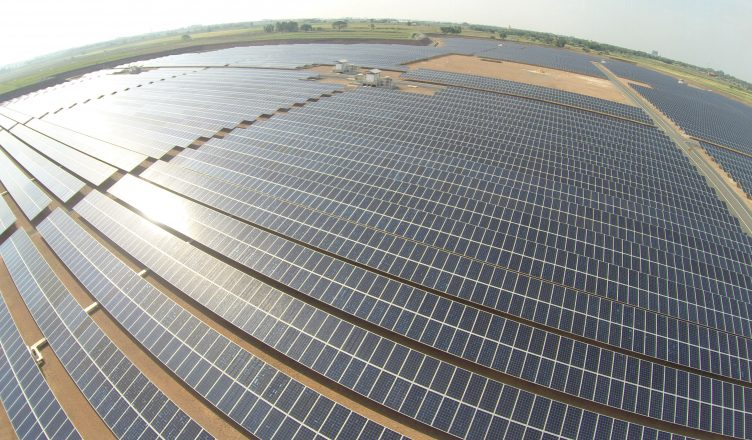

O que é?
Praticamente todas as fontes de energia (oceânicas, hidráulica, biomassa, eólica e combustíveis fósseis) derivam indiretamente da energia solar. Por isso o Sol é a origem de todas as formas de energia conhecidas na Terra. Além disso, a radiação solar pode ser utilizada como fonte direta de energia para aquecimento ou para produzir eletricidade. Existem diferentes tecnologias para o aproveitamento da energia solar, mas basicamente esse aproveitamento é feito através de dois tipos de processos principais: o fototérmico e fotovoltaico.
Como Funciona
A energia solar fototérmica ou térmica consiste no aproveitamento da radiação solar para o aquecimento de fluidos (líquidos ou gasosos). Os equipamentos mais utilizados para este tipo de aproveitamento são os coletores e concentradores solares. Os coletores solares são geralmente instalados nos telhados de prédios e residências, a radiação solar é absorvida por esses coletores e empregada no aquecimento da água para fins domésticos e industriais. Os concentradores são aplicados em atividades que requerem temperaturas elevadas, como a secagem de grãos e a produção de vapor.

Entre as desvantagens temos: variações climáticas (chuva, neve) influenciam na quantidade de energia produzida e durante a noite não há produção; riscos associados aos materiais tóxicos utilizados nos módulos fotovoltaicos; elevado consumo de energia para a fabricação dos painéis; as baterias utilizadas para armazenar energia possuem vida útil curta; é necessário o correto gerenciamento dos resíduos provenientes dos sistemas de produção de energia; possibilidade de ocupação de áreas para a implantação do projeto. Entretanto, esses fatores negativos podem ser controlados e não desmerecem a importância da energia solar.
O setor de energia solar no mundo tem crescido muito nos últimos anos. Entre os países com maior relevância nesse cenário estão a China, Alemanha, Estados Unidos, Japão, Itália e Espanha. O Brasil possui um elevado potencial de geração de energia solar, devido suas altas taxas de irradiação solares, mas essa tecnologia ainda é pouco explorada no país. Em 2016 apenas 0,01% do total de energia elétrica gerada no país foi proveniente da energia solar. Mas seu uso cresceu muito nos últimos anos no país e a tendência é que continue crescendo.